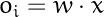

What is neural Network in essence?
A Neural Network is a machine learning algorithm with a specific architecture What is a Perceptron?
- Perceptron is a machine learning algorithm.
- We should use it when a dataset is linearly separable. What is transfer learning?
"Transfer learning is the improvement of learning in a new task through the transfer of knowledge from a related task that has already been learned" What is Gradient Descent
Remember Baske multivariable calculus. A descent gradient is just a negative Gradient. Why is sgn(x) not differentiable?
Think about the way this function looks like. This function has a sharp point. It has an instantaneous change in the function slope. What is a basic unit?
